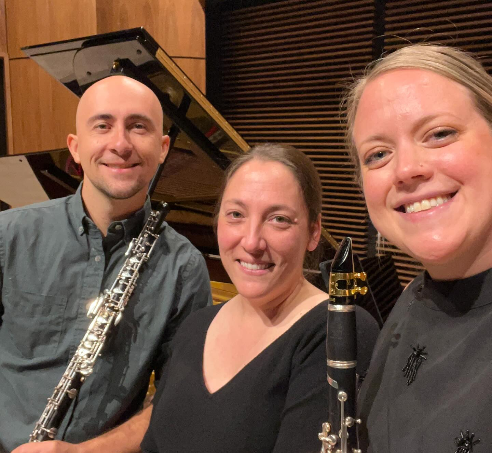
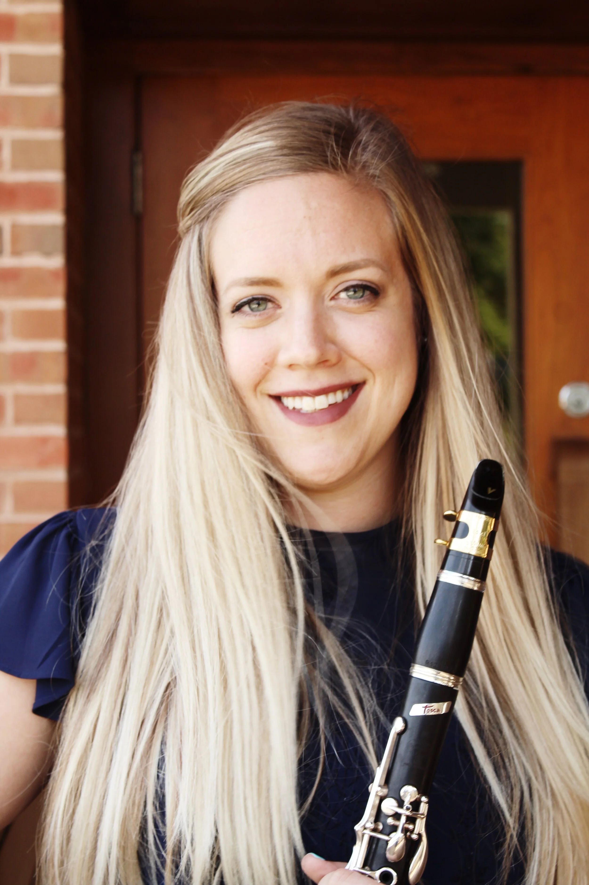

About Us

The Kaibab Trio was established in Fall 2024 by Northern Arizona University Kitt School of Music faculty Shane Werts, oboe, Kelsi Doolittle, clarinet, and Aimee Fincher, piano. Each of the members of the Kaibab Trio are dedicated to sharing their love of music and amplifying voices that may be historically underrepresented. The group brings extensive experience from orchestral, solo, and chamber backgrounds to their collaboration. While the word Kaibab is associated with multiple areas of Northern Arizona, its literal translation means “mountain lying down,” referring to the plateaus near the Grand Canyon. The name is inspired by the Kaibab National Forest, located near the trio’s hometown of Flagstaff, Arizona and the Grand Canyon. Kelsi, Shane, and Aimee are working to connect their music with their fondness for the northern Arizona region by commissioning new works for this instrumentation inspired by the unique wildlife and scenery of the area.
Members

Shane Werts, oboe
Placeholder bio — Shane Werts is awesome, we will think of more later. Read more at shanewertsmusic.com.

Kelsi Doolittle, clarinet
Placeholder bio — Kelsi is awesome, we will think of more later. Read more at kelsidoolittleclarinet.com.
Aimee Fincher, piano
Placeholder bio — Aimee likes spreadsheets. Read more at aimeefincher.com.